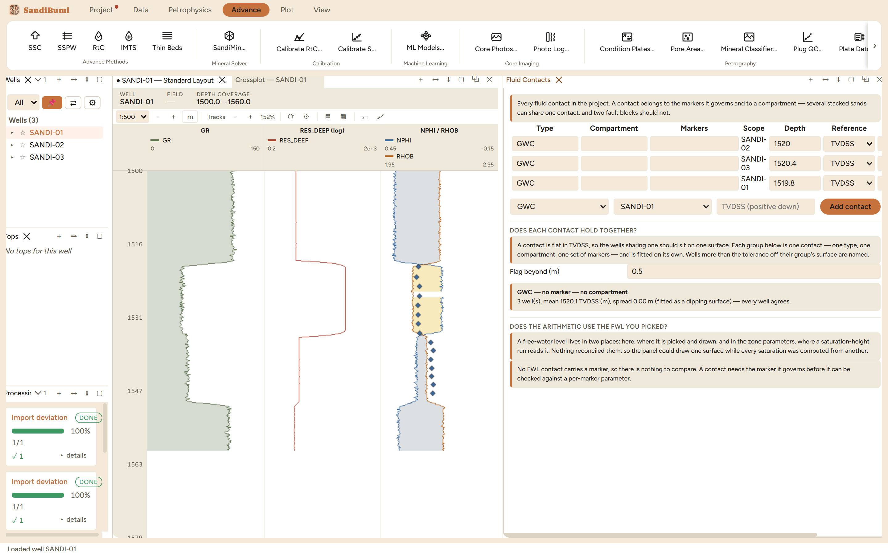

The Fluid Contacts pane is the project's registry of contacts: every
OWC, GWC, GOC, down-to, and free-water level, each belonging to a
compartment and to the markers it governs, with QC checks that ask whether
the picks are mutually consistent. Reach for it as soon as a study has
more than one contact opinion in it, because a contact scribbled per well
in a notebook is exactly the number that ships inconsistent.
The pane

Three well-scoped GWC picks (1519.8–1520.4 TVDSS) and
the flatness check fitting them as one surface: mean 1520.1 m, every
well within the 0.5 m tolerance.
A contact row carries type, compartment, markers, scope, depth
and reference (TVDSS or measured depth). The header states the
grouping rule: several stacked sands can share one contact, and two
fault blocks should not.
Two QC sections. "Does each contact hold together?" fits each
(type, compartment, marker-set) group as a surface in TVDSS and names
wells further off it than the tolerance. "Does the arithmetic use the
FWL you picked?" reconciles the FWL drawn here against the FWL the
saturation-height run read from zone parameters, because nothing else
connects those two numbers.
Step by step
Open the pane (workspace ＋ menu ▸ Fluid Contacts), add
each pick with its type, scope and depth; well-scoped picks in TVDSS
are the normal case.
Set the flag tolerance to what the geology allows (0.5 m here) and
read the group verdicts.
Give a FWL contact the marker it governs, so the second check has
something to compare against the zone parameters.
Reading the result
The example's three picks agree: mean 1520.1 m TVDSS, no well flagged.
One caution the arithmetic itself imposes: the group is fitted as a
dipping surface, and a plane through exactly three wells passes through
them exactly, so with three picks the spread is zero by construction and
the check cannot fail. It starts discriminating at the fourth well, which
is worth knowing before quoting "every well agrees" as evidence. The
second check's refusal in the figure is the pane being honest about its
prerequisites: with no marker on a FWL contact there is nothing to
reconcile, and it says so rather than passing.
QC and pitfalls
Compartments are the unit of truth. Two fault blocks pooled
into one group fit a surface between their two real contacts and flag
both; assign the compartment before believing a flag.
TVDSS picks need real geometry. A measured-depth pick in a
deviated well is a different number; the pane's MD reference exists
for verticals, and the flatness check needs surveys to mean
anything.
A gas-down-to is not a contact. GDT and ODT record what a
well proved, not where the fluid change is; keep the types honest so
the registry stays a record of evidence, not of hope.